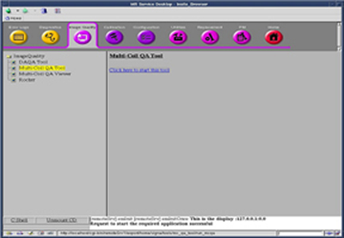
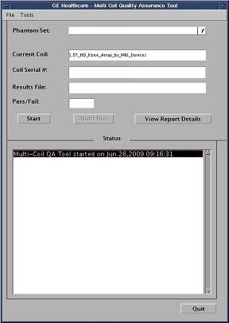

Illustration 5:

| NOTE: | Upon start-up the MCQA Tool will attempt to identify the coil that is connected to the system. If successful it will be automatically listed it in the Current Coil field. See example in Illustration 6. If the coil is not recognized then a message window appears indicating the coil needs to be configured. |
Illustration 6: Current Coil Field

| NOTE: | If a recognized coil has the capability of using either a Legacy Phantom Set or a Unified Phantom Set, a pop-up will be displayed prompting the user to make a selection. See Illustration 7 below. |